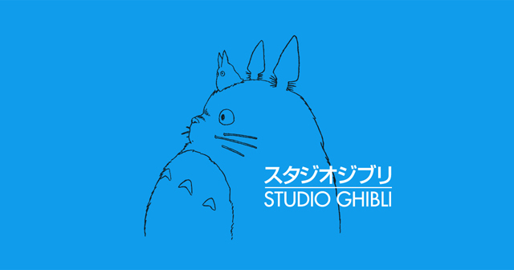

-


Studio Ghibli is a Japanese animation film studio founded in 1985 by animators Hayao Miyazaki, Isao Takahata, and producer Toshio Suzuki. It is known for its imaginative and beautiful films with strong environmental and humanitarian themes. The studio has produced numerous critically acclaimed and commercially successful films, including "Spirited Away" and "Princess Mononoke," and has a strong following around the world. Studio Ghibli has also produced short films, TV commercials, and music albums. The studio remains true to its founding principles of creativity, imagination, and storytelling and is a source of inspiration for animators and filmmakers. It has also been a strong advocate for environmentalism and humanitarian causes.